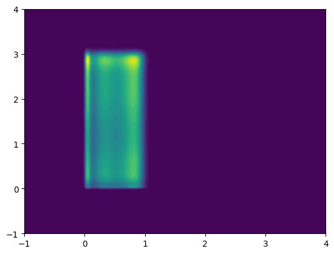

Conditional density estimation#
This example shows how we can perform conditional density estimation with normalising flows. Here we use a block_neural_autoregressive_flow, although other flows are available and all support conditional density estimation (see flowjax.flows). We consider a two dimensional model, where the upper limit of the target uniform distribution depends on another uniform random variable:
\[u_i \sim \text{Uniform}(0,5) \quad \text{for}\ i\ \text{in}\ 1,2\]
\[x_i \sim \text{Uniform}(0, u_i), \quad \text{for}\ i\ \text{in}\ 1,2\]
We will try to infer the conditional distribution \(p(x|u)\) using samples from the model.
Importing the required libraries.
[4]:
import jax.numpy as jnp
import jax.random as jr
import matplotlib.pyplot as plt
from flowjax.distributions import Normal
from flowjax.flows import block_neural_autoregressive_flow
from flowjax.train import fit_to_data
Generating the toy data.
[5]:
key, x_key, cond_key = jr.split(jr.key(0), 3)
u = jr.uniform(cond_key, (10000, 2), minval=0, maxval=5)
x = jr.uniform(x_key, shape=u.shape, maxval=u)
Creating and training the flow.
[10]:
key, subkey = jr.split(jr.key(0))
flow = block_neural_autoregressive_flow(
key=subkey,
base_dist=Normal(jnp.zeros(x.shape[1])),
cond_dim=u.shape[1],
)
key, subkey = jr.split(key)
flow, losses = fit_to_data(
subkey,
flow,
data=(x, u),
learning_rate=5e-2,
max_patience=10,
)
34%|███▍ | 34/100 [00:12<00:24, 2.70it/s, train=1.35, val=1.33 (Max patience reached)]
We can now visualise the learned density. Let’s condition on \(u=[1,3]'\), in which case we expect \(x_1 \sim \text{Uniform}(0, 1)\) and \(x_2 \sim \text{Uniform}(0, 3)\)
[11]:
resolution = 200
test_u = jnp.array([1.0, 3])
xgrid, ygrid = jnp.meshgrid(
jnp.linspace(-1, 4, resolution), jnp.linspace(-1, 4, resolution),
)
xyinput = jnp.column_stack((xgrid.reshape(-1, 1), ygrid.reshape(-1, 1)))
zgrid = jnp.exp(flow.log_prob(xyinput, test_u).reshape(resolution, resolution))
plt.contourf(xgrid, ygrid, zgrid, levels=50)
plt.show()

[ ]: